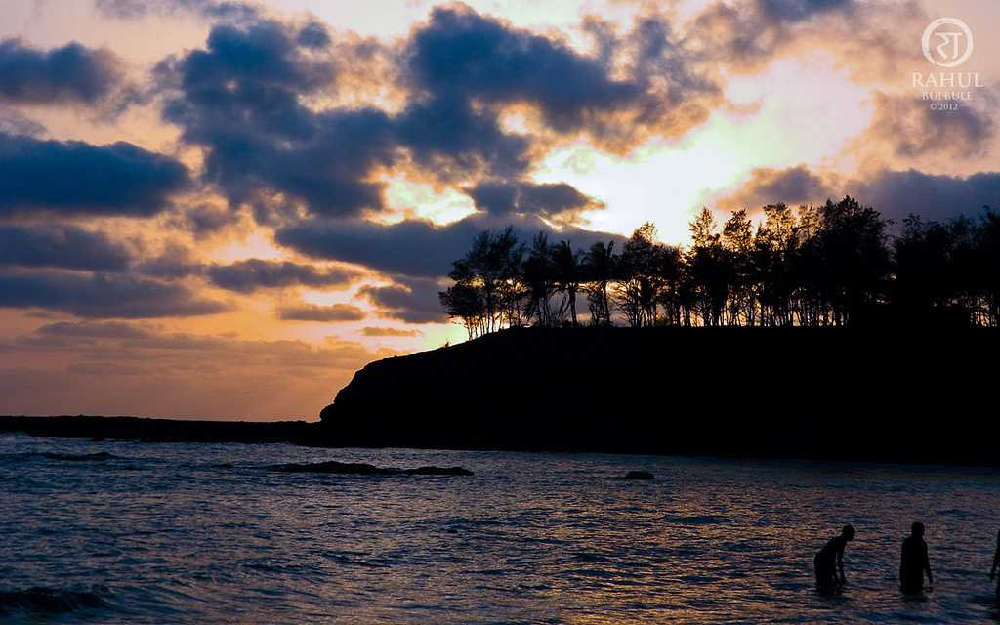

Goa-Calangute beach
15km from Panjim.
Water sports activities:surfing,parasailing.
Also called Queen of beaches.
Goa-Fort Aguada
17th-century Portuguese fort
18km from Panjim.
Stunning view of sunset.

Goa-Cruise
Explore the exotic scenery,Pristine
waters and
breathtaking view of sunset.
reptiles,salt-water crocodile.
Gujarat-Gir National Park
only remaining home for
Asiatic lions. Leopard
and Chousingha
also spotted.

Gujarat-Statue of Unity
The bronze statue is a Memorial
to the Iron man of India
Sardar Vallabhbhai Patel
Gujarat-Rann of Kutch
Large area of salt marshland
situated in Thar desert
Sunsets are great treat to eyes.
Maharashtra-Mahabaleshwar
Hill station in the western ghats
Known for
strawberries,rivers
and magestic peaks.
Maharashtra-Aurangabad
Ajanta and Ellora caves.
Beautiful sculptures and
paintings
Witness ancient Indian architeture,
Maharashtra-Lonavala
Most visited hill station in western ghats
Ideal for camping &
trekking.
Lots of waterfalls and lakes.

Maharashtra-Alibaug,Coastal town
in Konkan region of Maharashtra.
Weekend getaway.
Known for
beaches, villas
and beautiful scenery.
Dadra and Nagar Haveli
Vanganga lake-boat rides, flowerbeds
lush green gardens
around
the lake.
Dadra and Nagar Haveli
Khanvel-Crystal blue river flowing by,
rich
biodiversity,history and
tales of the eras goneby.
Dadra and Nagar Haveli
Hirwa Van Gardens-meaning Green forest
Popular picnic spot
with cascading
waterfalls
and flowerbeds.
Dadra and Nagar Haveli
Dudhani-45 km away from Silvassa
leisure sports amongst the
scenic beauty.
Wounding roads and green slopes.
Daman and Diu-Diu,Naida caves
Located on the periphery of Diu fort.
It has a big
network of tunnels.
There are square hewn steps.
Daman and Diu-Diu,Diu Fort
Built by the Portuguese
Located on the western coast
At the mouth of the Gulf of Khambhat.
Daman and Diu-Daman,Lighthouse
It is sure to leave an imprint
in every tourist's
mind.
Magnificent view of sunset.
Daman and Diu-Daman,St.Jerome fort
Also called Nani Daman Fort.
It has a
magnanimous gateway
that faces a river.